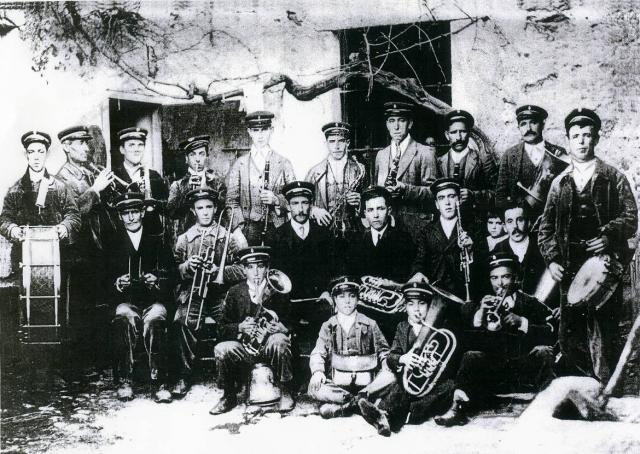
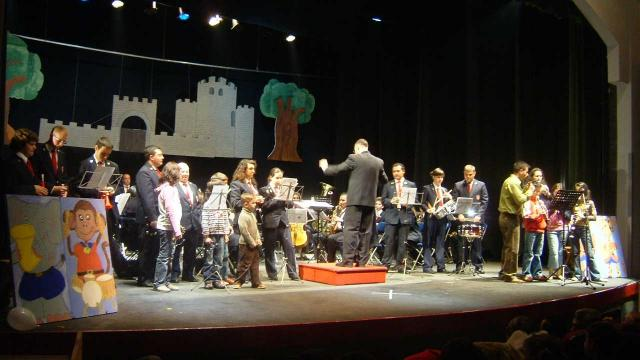
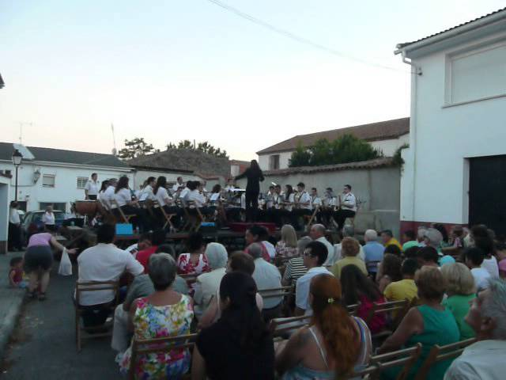
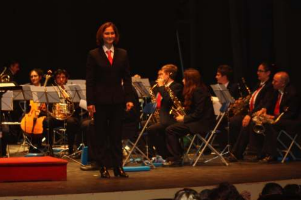
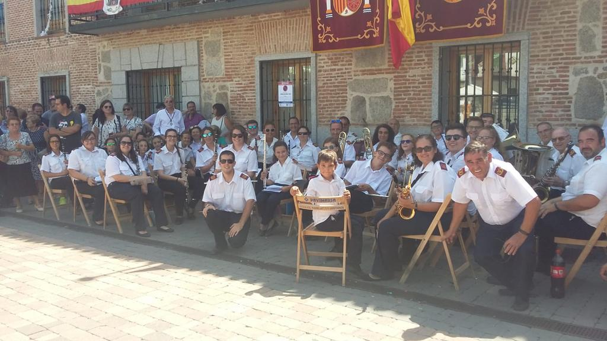
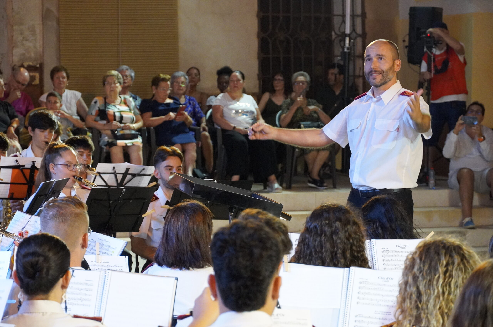

Unión Musical de San Martín de Valdeiglesias
Puedes encontrarnos y seguirnos en nuestras redes sociales,
o ponerte en contacto directo con nosotros:
Tlf. 625 172 446
Email: unionmusicaldesmv@gmail.com
La Unión Musical de San Martín de Valdeiglesias es la continuación de una organización que surgió a finales del siglo XIX. Es concretamente en 1880 cuando Benito Bárcena Cisneros funda la llamada Banda de Música de San Martín de Valdeiglesias, que estaba compuesta por 26 músicos. Esta experiencia duró hasta los albores del siglo XX, cuando asume la dirección Ramiro Ocaña, quien da a la banda un nuevo impulso tanto musical como docente. Pese a su juventud, su entusiasmo contagió a los vecinos del pueblo, y como consecuencia surgió un importante grupo de músicos, entre los que hay que destacar a Enrique Ocaña, compositor del Himno a San Martín de Valdeiglesias, que dirigió la banda desde 1952.
En 1985 se crea la actual formación musical, recuperando algunos de los antiguos músicos y bajo la batuta de Manuel Jiménez Ocaña. Su primera actuación en público tuvo lugar el 7 de septiembre de 1986, durante la celebración de las Fiestas Patronales de Nuestra señora la Virgen de la Nueva. En 1993 asume la dirección Javier Álvarez y al año siguiente la histórica institución musical pasa a tener una condición de asociación músico-cultural, pero nunca desvinculada del municipio.
Durante los siguientes quince años, la Unión Musical recorre multitud de municipios y ciudades de España con salidas internacionales incluidas a Carbon- Blanc y Arrentela y la grabación del CD de la Unión Musical en el que se incluye el Himno de San Martín de Valdeiglesias interpretado por el barítono José Julián Frontal. Desde 2002, esta asociación musical es miembro de la Federación de Bandas.
En 2008 la dirección artística pasa a manos de Gemma González y la subdirección a cargo de Manuel Castrejón. Es en este periodo en el que se convierte en tradición los conciertos de barrio que se desarrollan durante el verano en la localidad y se participa en actuaciones impulsadas por la Federación como los Veranos de la Villa de Madrid.
En 2018 asume la dirección artística Manuel Castrejón, anterior subdirector y músico de la Unión Musical de San Martín de Valdeiglesias desde 2005. Durante este periodo se consigue estabilizar la actividad de la Unión Musical y se desarrolla un bonito acto con la unión de dos bandas para la preparación del concierto de Santa Cecilia del año 2019 (Concierto a 2 bandas) junto a la Unión Musical de Cadalso de los Vidrios.
Desde octubre de 2021 asume la dirección Sergio Redondo Amarilla, manteniendo e impulsando nuestra actividad tanto en las actuaciones locales como en las salidas fuera de la Comunidad de Madrid.

Puedes encontrarnos y seguirnos en nuestras redes sociales,
o ponerte en contacto directo con nosotros:
Tlf. 625 172 446
Email: unionmusicaldesmv@gmail.com